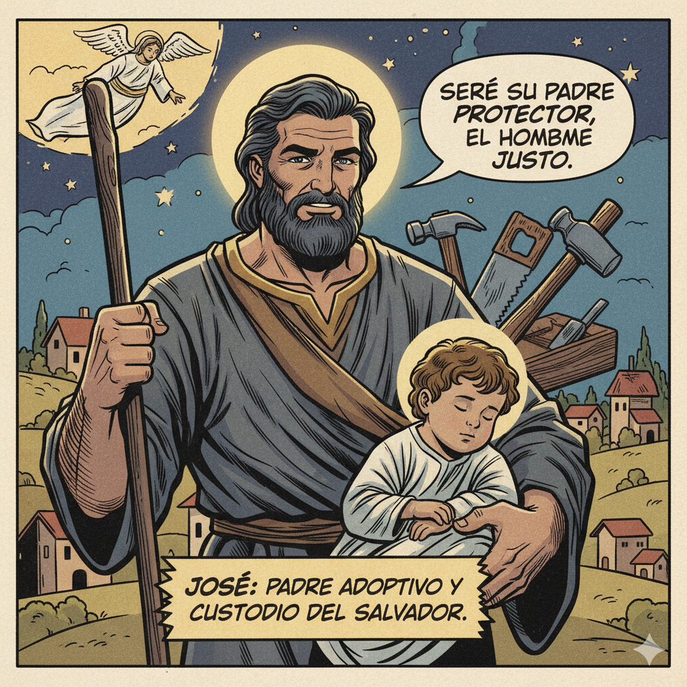

El Padre Adoptivo de Jesús
San José, modelo de obediencia y confianza, ayúdanos a escuchar la voz de Dios y a cumplir su voluntad con fe como tú lo hiciste. Amén.
José era un carpintero de Nazaret, descendiente del rey David. Cuando descubrió que María, su prometida, esperaba un hijo, decidió divorciarse en secreto para no exponerla públicamente. Pero un ángel del Señor se le apareció en sueños y le reveló que el niño era del Espíritu Santo, el Salvador prometido.
José obedeció inmediatamente. Se casó con María, cuidó de ella durante el viaje a Belén, estuvo presente en el nacimiento de Jesús y lo protegió cuando Herodes quiso matarlo, llevando a la familia a Egipto. José fue un padre amoroso y responsable, enseñó a Jesús el oficio de carpintero y lo educó en la fe judía.
Aunque no habla ni una sola palabra en los Evangelios, José nos enseña con sus acciones: la obediencia a Dios, la protección de la familia y el trabajo honrado. Él aceptó ser el padre de Jesús porque Dios se lo pidió, y cumplió esa misión con total dedicación.
José nos enseña que la verdadera paternidad no viene solo de la sangre, sino del amor, la protección y el cuidado. Es el modelo perfecto del padre cristiano y del trabajador honesto.
Materiales: Papel, lápices de colores, tijeras
Instrucciones:
Mensaje principal: San José nos enseña que la verdadera paternidad viene del amor y la dedicación, no solo de la sangre. Su obediencia silenciosa a Dios y su cuidado amoroso de Jesús y María lo convierten en el modelo perfecto del padre cristiano y del trabajador honesto.
San José, padre adoptivo de Jesús, enséñanos a ser obedientes como tú, a confiar en los planes de Dios y a proteger a quienes amamos. Ayúdanos a trabajar con honradez y a vivir en familia con amor. Amén.